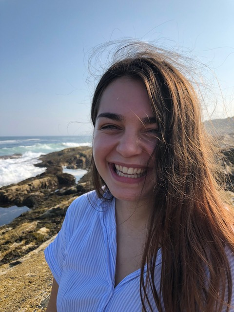
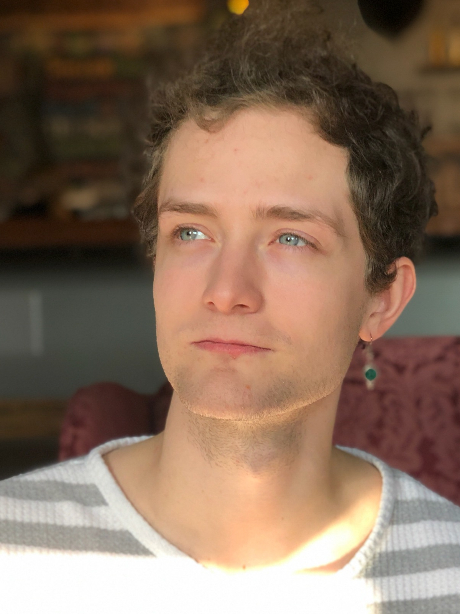

About
As an acknowledgment of our educational privileges at the University of Minnesota, we, a group of students in the arts, aim to use our knowledge and resources here at the university to curate a production - Blueprint.
Led by our mission statement “Equitable Artmaking. Inclusive Space. Thoughtful Conversation.”, Blueprint is a non-profit production which functions essentially as a platform to support equitable artmaking by providing an accessible foundation for emerging artists, from their various artistic pursuits (ranging from visual art, film, live music, poetry, dance, and in between), to share their work with a wider audience.
With our values of accessibility in mind, the production team has been working hard to strategize fundraising events and donation drives with the hopes of making the event free for all members of the audience.
Vision
Blueprint is driven to mediate artistic expressions, collaborations, discourse, and knowledge through the generation of thoughtful conversations between communities of artists, students, faculty, and the general public in the Twin Cities.
Mission
- Equitable Artmaking
- Inclusive Space
- Thoughtful Conversation
Values
- Equity
- Safe Space
- Accessibility
- Collboration
- Conversation Starting
The Team
Maggie Bergeron
Advisor

Maggie Bergeron is an organizer, choreographer, dancer and teacher. She currently co-imagines Hear Here - a live music and movement festival, is a Senior Teaching Specialist at the U of MN Dance Program and teaches in the Dance Department at the Saint Paul Conservatory for Performing Artists (SPCPA). Maggie is committed to exploring the process of collaboration in her work, and is often more interested in edges and overlaps. Her work has been seen locally at the Southern Theater, Red Eye Theater, Walker Art Center, Bryant Lake Bowl and Cedar Cultural Center. Maggie graduated from Interlochen Arts Academy and holds a BFA in Dance from the University of Minnesota. She is a Licensed K-12 Dance Instructor and holds a Masters of Arts in Teaching.
Philip Hommes
Business Management Team

Philip Hommes is dancer, choreographer, and songwriter located in Minneapolis, MN. Originally from Two Harbors, MN, he has been involved in dance since the age of six, performing and competing locally and nationally as a part of Duluth Dance Center until the age of 18. He currently attends the University of Minnesota as a dance BFA sophomore and is involved in performances within and outside of the program. Additionally, he is a choreographer for Duluth Dance Center competitive dancers and has won choreography awards for his work. His future plans include continuing to choreograph for a wide range of dancers )both professionally and recreationally), performing in a dance company, and furthering his progress to his goals as a songwriter in the contemporary music industry.
Zofia Mathews
Programing Team
 Zofia is a B.F.A. junior in the dance program nearly finished with her Spanish minor. She has been dancing since she was four in various styles which inform her curiosity and passion for movement. Zofia dreams of performing professionally after graduation and hopes to have means to travel and chase other learning opportunities. She has taken classes in three languages other than English, but only speaks one of them now. On campus, Zofia is in the Student Dance Coalition, and is a Section Leader for the College of Liberal Arts. She is excited to be involved in Dance Productions and continue learning about the many different aspects of performance.
Joseph Wurm
Programming Team
 Joseph Wurm is a Dance BFA major also trying to get a BS in Sociology with minors in Global Studies and Gender Women and Sexuality Studies. He started his performance career and education with First Stage Theater Academy in milwaukee. There, he performed in a handful of musicals and from then on, he went to dancing in various University Dance program events and doing some light theatre on the side. He hopes to continue pursuing the performing arts and generating work that he hopes to inspire empathy and understanding of perspectives in others, through varieties of performance art, and in training other young dance/circus/performing artists.
Fei Bi Chan (陈菲碧)
Fundraising Team
 Fei Bi Chan is a native of Malaysia and is currently in her senior year pursuing a BA in both Psychology and Dance. She is part of the Grants & Fundraising team.
Fei Bi Chan is a native of Malaysia and is currently in her senior year pursuing a BA in both Psychology and Dance. She is part of the Grants & Fundraising team.
P.S. she loves to eat (and is capable of cooking) good food, so if you ever need any suggestions or a foodie companion, do not hesitate to reach out!
Gabriel Blackburn
Fundraising Team
 Gabriel is a senior pursuing his BFA in Dance at the U of M, and a company member with SHAPESHIFT dance company. He grew up in the twin cities and has been performing professionally for 5 years, and teaching for 4 years. Aside from dance, he also has passion for music and activism. As a part of the Fundraising and Grants team, he is dedicated to growing funds to make the goals of Blueprint possible.
Gabriel is a senior pursuing his BFA in Dance at the U of M, and a company member with SHAPESHIFT dance company. He grew up in the twin cities and has been performing professionally for 5 years, and teaching for 4 years. Aside from dance, he also has passion for music and activism. As a part of the Fundraising and Grants team, he is dedicated to growing funds to make the goals of Blueprint possible.
Tori Breen
Tech Team
 Tori Breen is a second-year student at the University of Minnesota, pursuing a B.F.A. in Dance and a minor in Sustainability Studies. She has had the pleasure of performing work by Eko Supriyanto, Chris Schlichting, Amanda Whitworth, and Veronica Factory, among others. Tori is invested in critical dance studies and in choreographing work that is relevant and kind. In addition to dancing, she loves playing in the dirt and is passionate about sustainable agriculture. Tori is excited to be on the tech team for Blueprint, working with all of these lovely people to create this show!
Tori Breen is a second-year student at the University of Minnesota, pursuing a B.F.A. in Dance and a minor in Sustainability Studies. She has had the pleasure of performing work by Eko Supriyanto, Chris Schlichting, Amanda Whitworth, and Veronica Factory, among others. Tori is invested in critical dance studies and in choreographing work that is relevant and kind. In addition to dancing, she loves playing in the dirt and is passionate about sustainable agriculture. Tori is excited to be on the tech team for Blueprint, working with all of these lovely people to create this show!
Charlie (佰霖)
Tech Team
 Hi! My name is Charlie, or 佰霖. I'm with the tech group. I'm a Dance & Psychology double major, and Cinema minor. I'll be working on tech related stuff like working with stage manager and lighting designer during the making of Blueprint. I’m very excited to be a part of blueprint.
Hi! My name is Charlie, or 佰霖. I'm with the tech group. I'm a Dance & Psychology double major, and Cinema minor. I'll be working on tech related stuff like working with stage manager and lighting designer during the making of Blueprint. I’m very excited to be a part of blueprint.
Camille Chong Yuanya Horstmann
Marketing Team
 Camille Chong Yuanya Horstmann is an artist from the Twin Cities. She is currently pursuing her Bachelors in dance at the University of Minnesota. Camille's primary mission is to create works in collaboration with other artforms outside of dance. She believes it is in this way that the most influential pieces are created with the potential to live on in memory.
Camille Chong Yuanya Horstmann is an artist from the Twin Cities. She is currently pursuing her Bachelors in dance at the University of Minnesota. Camille's primary mission is to create works in collaboration with other artforms outside of dance. She believes it is in this way that the most influential pieces are created with the potential to live on in memory.
Allie Kunesh
Marketing Team
 Allie Kunesh is a third year student at the University of Minnesota, working on a BFA Dance Major and a Health and Wellness Promotion Minor. She has been dancing since the age of three and is passionate about performing. For the 2018/19 Dance Production class, she is excited to be involved as a marketing team member. Through this role she will be focusing on the promotional elements for the Blueprint show, as well as supporting the tech team as needed. Outside of dancing, Allie enjoys singing, watching movies with friends, and cozying up with a nice cup of coffee. Throughout this process, Allie looks forward to learning about the different steps that go into creating a performance and connecting with a variety of artists.
Allie Kunesh is a third year student at the University of Minnesota, working on a BFA Dance Major and a Health and Wellness Promotion Minor. She has been dancing since the age of three and is passionate about performing. For the 2018/19 Dance Production class, she is excited to be involved as a marketing team member. Through this role she will be focusing on the promotional elements for the Blueprint show, as well as supporting the tech team as needed. Outside of dancing, Allie enjoys singing, watching movies with friends, and cozying up with a nice cup of coffee. Throughout this process, Allie looks forward to learning about the different steps that go into creating a performance and connecting with a variety of artists.